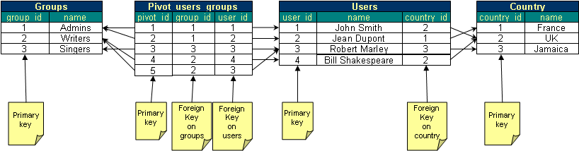
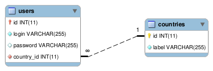
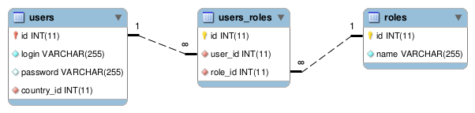
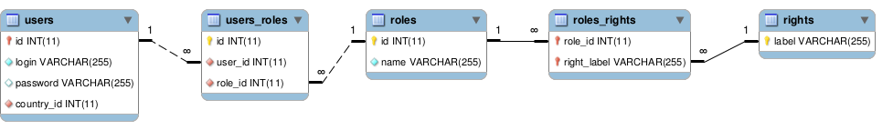

Quick start guide
In this quick start guide, we will see how you can use TDBM to query, read and write data to your database We will assume that you successfully installed TDBM into your favorite framework, and therefore, that TDBM is connected to your database and that the TDBM DAOs and beans have been generated.
Our playground data model
For this tutorial, let's assume a very classic database schema for handling users.
- We have users. Users can be part of several groups, and obviously, a group can contain several users.
- A group has a name.
- A user has a name and is part of a country.

DAOs and beans
When you installed TDBM, you spent some time configuring a connection to your database and then, you generated the DAOs and beans.
DAOs are "Data Access Objects". DAOs are classes that will help you access the objects in your database. There is roughly one DAO per table in your database. Each DAO will return "beans". Each row in your database will be represented by one instance of a bean.
Each time your database model changes (if you add a new table, a new column, an index or a foreign key...), you will need to regenerate those DAOs and beans.
Usage sample
Let's now review a few samples:
Creating a new row in the "users" table:
// Create a new bean
// By default, you MUST pass to the bean constructor the list of all columns that are not nullable.
$user = new User("myName");
// Fill the remaining (nullable) columns of the bean using the setters
$user->setPassword(password_hash("myPassword", PASSWORD_DEFAULT));
$user->setMail("me@mail.com");
// Any date should be passed as a PHP DateTime or DateTimeImmutable
$user->setCreateDate(new DateTimeImmutable());
// Finally, let's save this bean.
// For this, we need an instance of the DAO.
// The $userDao will be typically returned by the container of your application.
$userDao->save($user);Since we have a "users" table, TDBM generated
a UserDao class and a User class. UserDao can be used to create/update/delete/search any
user.
You can also notice that the "save()" method is called on the UserDao, not on the User.
Retrieving a user bean by its primary key:
// Let's get the bean
$user = $userDao->getById(42);
// Let's display the name
echo $user->getName();TDBM will automatically detect the primary key of your table (of course, your table must have a primary key). There is no name convention to respect, your primary key column can be named anything ('id', 'userid', 'iduser', ...)
To use this method, the primary key must be on a single column. If your primary key is on several columns, you can still use the search method (see below).
Querying the database
Now, what about getting the list of all users and displaying their name?
Ok, that's easy, just use the findAll() method!
// Let's get the list of users
$userList = $userDao->findAll();
// Let's display the names
foreach ($userList as $user) {
/* @var $user User */
echo $user->getName()."<br/>";
}In our example, we would see
John Doe
Jean Dupont
Robert Marley
Bill ShakespeareThe findAll method will return the list of beans.
Of course, most of the time, you don't want all the rows in a database.
You want to perform a query with filters.
Querying the database on indexed columns
TDBM will do its best to help you query your database easily. In particular, if you put an index on one or many columns, it is likely that you will want to perform a query on this index. TDBM will detect the index and generate a method in the DAO.
Here is a sample:
CREATE INDEX users_status_idx ON users (status);The users table has an index on the status column.
Automatically, TDBM will generate a findByStatus method in the AbstractUserDao class:
$users = $userDao->findByStatus('on');See how cool this is?
But wait, there is more! What about unique indexes?
CREATE UNIQUE INDEX users_login_idx ON users (login);TDBM will generate a findOneByLogin method:
$user = $userDao->findOneByLogin('alice');Please note how a unique index generates a findOneBy... method instead of a findBy... method.
Finally, TDBM can also deal with multi-columns indexes, or indexes on foreign keys:
CREATE INDEX users_status_country_idx ON users (status, country_id);This index on both the status and the country_id column will be turned into a findByLoginAndCountry method:
$country = $countryDao->getById(1);
$user = $userDao->findByLoginAndCountry('on', $country);Notice how the parameter passed for the foreign key is a bean and not an ID.
Generally, expect in the getById method, TDBM will do its best to shield you from passing IDs around. You are expected to use beans instead of ids. It helps writing cleaner code, that is more object oriented and that can benefit from type-hinting.
Querying the database with filters
Now, what if I want to get something more difficult, like the list of users with name starting with a 'J'?
To do this, I need to call the find method and pass the filter in parameter.
At this point, it might be a good idea to have a look at the code TDBM did generate. For the users table, TDBM
generated 4 classes:
AbstractUserDao: the base class that contains methods to access the "users" table. It is generated by TDBM. You should never modify this class.UserDao: this class extendsAbstractUserDao. If you have some custom requests, you should perform them in this class. You can edit it as TDBM will never overwrite it.AbstractUser: the bean mapping the columns of the "users" table. This class contains getters and setters for each and every column of the "users" table. It is generated by TDBM and you should never modify this class.User: this class extendsAbstractUser. If you have some custom getters and setters, you should implement them in this class. You can edit it as TDBM will never overwrite it.
In our example, we want to perform a query that retrieves any name starting with a "J". This is a new
kind of query. Since any request should be part of a DAO, we will add this request to the UserDao.
Therefore, our code will be:
class UserDao extends AbstractUserDao {
/**
* Returns the list of users starting with $firstLetter
*
* @param string $firstLetter
* @return User[]
*/
public function findUsersByLetter($firstLetter) {
// The find can be used to retrieve a list of User
// It takes in parameter a SQL filter string and a list of parameters.
return $this->find("name LIKE :name", [ "name" => $firstLetter.'%' ]);
}
}And you can simply use it like this:
$users = $userDao->findUsersByLetter("J");
foreach ($users as $user)
{
/* @var $user User */
echo $user->getName()."\n";
}You can learn much more about filters in the advanced section of this documentation.
You should never write something like:
// NEVER DO THIS!
$list = $this->find("name LIKE '".$firstLetter.'%"' );Discarding parameters automatically with "Magic parameters"
TDBM helps you build queries with a variable number of parameters in a very efficient way.
Let's say you want to filter products by category and store.
Your request might look like this:
class ProductDao extends AbstractProductDao {
/**
* Returns the list of products filtered by category and/or store
*
* @param Category $category
* @param Store $store
* @return Country[]
*/
public function getProductsByCategoryAndStore(Category $category = null, Store $store = null) {
return $this->find("category = :category AND store = :store", [
"category" => $category ? $category->getId() : null,
"store" => $store ? $store->getId() : null
]);
}
}The interesting part is that TDBM will automatically discard any parameter that is set to null.
So let's imagine that your $store parameter is null. Suddenly, your filter will transform into: category = :category.
The AND store = :store will be automatically dropped by TDBM.
How is this possible? TDBM is built upon MagicQuery that has such a feature. You can read more about this feature here and here (french link).
Getting only one record
If you are confident that your query will only ever return one record (for instance, you are performing a lookup by login on the Users table, then, you can use the findOne method instead of find.
class UserDao extends AbstractUserDao {
/**
* Returns a user by login
*
* @param string $login
* @return User|null
*/
public function getUserByLogin($login) {
// The findOne method can be used to retrieve a single User
// It takes in parameter a SQL filter string and a list of parameters.
// If will return the User, or null of no user is found
// If more than 1 user is found, it will throw an exception.
return $this->findOne("login = :login", [ "login" => $login ]);
}
}findOne method will throw an exception if your query returns more than one row. If your query returns many rows but you are only interested in the first one, you should use the first method of the result set object.So far, so good, we have had enough play with the Users table. But the users table is not alone and it would be good to get some more information.
Navigating the object model
Many to one relationships

So what if I want to get the name of the country in which the first user is located?
// Let's get the user bean
$user = $userDao->getById(1);
// Let's get the country bean
$country = $user->getCountry();
// Let's display the country name
echo $country->getName();Notice how you can jump from the users to the countries using the getCountry method.
The user table has a country_id column that points (through a foreign key) to the countries table, so the User object has a getCountry method!
Of course, there is also a setter:
$user->setCountry($country);Notice how you set an object rather than an ID.
One to many relationships
What if I want to find a list of users from a particular country?
That's easy too.
// Let's get the country bean
$country = $countryDao->getById(1);
// Let's get the users from that country
$users = $country->getUsers();Many to many relationships

TDBM can automatically detect pivot tables in your data model. Pivot tables will have no DAOs and no Beans associated. Instead, TDBM will generate a complete list of methods in the linked beans to edit them.
// Getter
$roles = $user->getRoles();
// Adder
$user->addRole($role);
// Remover
$user->removeRole($role);
// Check existence
$hasRole = $user->hasRole($role);
// Set all beans at once
$user->setRoles($roles);Unlike in Doctrine, TDBM does not need to have a notion of owning and inverse side of a many to many relationship.
Many to many relationships are symmetrical. Therefore, you will find the same methods in the Role class:
// Getter
$users = $role->getUsers();
// Adder
$user->addUser($role);
// Remover
$user->removeUser($role);
// Check existence
$hasUser = $role->hasUser($role);
// Set all beans at once
$role->setUsers($users);Joins ans filters
Simple joins
In the previous chapter, we saw how to apply filters on a table (for instance to get all users whose name starts with a 'J'). In this chapter, we will see how to apply JOINs in the filters.
In the example below, we will perform a query to get all users living in a country whose name starts by a given letter.
class UserDao extends AbstractUserDao {
/**
* Returns the list of users whose country name starts by "$countryName"
*
* @param string $countryName
* @return User[]
*/
public function getUsersByCountryName($countryName) {
// Behold the magic!
return $this->find("country.name LIKE :country", [ 'country' => $countryName.'%' ] );
}
}Here, we called the find method passing a filter on the name column of the country table.
Hey! But where is the "join"?
Behind the scene, TDBM is calling a library called MagicQuery.
MagicQuery is smart enough to automatically detect the link between the users and the countries table. You just need
to tell TDBM what filter you want on any column in any table in your database model and TDBM will find
the right query for you. MagicQuery is looking for the shortest path between 2 tables using foreign key relationships.
Our experience shows that 90% of the time, this is what your are looking for.
Filtering by ID/bean
Most of the time, of course, you will not pass the name of the country but the ID of the country. Actually, using TDBM you can just pass the object. Have a look!
class UserDao extends AbstractUserDao {
/**
* Returns the list of users whose country is "$country"
*
* @param Country $country
* @return User[]
*/
public function getUsersByCountry(Country $country) {
// You can pass a Country instance directly to the find method!
return $this->find($country);
}
}You would use this method like this:
// Let's get the country bean
$country = $countryDao->getCountryById(12);
// Let's get the users from this country
$userList = $user->getUsersByCountry($country);
// Let's display the list of users in this country
foreach ($userList as $user)
{
/* @var $user User */
echo $user->getName().'<br/>';
}Complex joins

So now, what if I want to find what rights the user "Robert Marley" has?
Well this is really easy. Remember how TDBM relies on MagicQuery to find the relationship between tables? It turns out MagicQuery is clever enough to find the shortest path between any table in your data model. This means your code can look like this:
class RightDao extends AbstractRightDao {
/**
* Returns the list of rights for a given user
*
* @param User $user
* @return Right[]
*/
public function getRightsForUser(User $user) {
// Behold the magic!
return $this->find($user);
}
}Powerful, isn't it? TDBM automatically detected the two pivot tables and performed 4 joins to retrieve the roles our user has.
Specifying the joins
TDBM will do its best to automatically detect joins for you. This will save you the hassle of writing tedious JOIN statements. To find the joins, TDBM will look for the shortest path between tables. However, sometimes, the JOIN you want to perform is not on the shortest path. In this case, you will need to provide TDBM with the JOINs you want to do.
You do this using the findFromSql or findOneFromSql methods.
class RoleDao extends AbstractRoleDao {
/**
* Returns the list of roles where right label = CAN_SING.
*
* @return Role[]
*/
public function getRolesByRightCanSing()
{
return $this->findFromSql('roles JOIN roles_rights ON roles.id = roles_rights.role_id JOIN rights ON rights.label = roles_rights.right_label',
'rights.label = :right', ['right' => 'CAN_SING']);
}
}For instance, if we are fetching results from the roles tables (because we are in the RoleDao), then:
// This is ok
$this->findFromSql("roles JOIN ...", ...);
// This is NOT ok
$this->findFromSql("roles r JOIN ...", ...);Simple filter syntax
If your filter is only made of "=" and "AND" statements, you can use the shortcut "array" syntax in your queries.
Here, we filter a products table by category_id and status:
class ProductDao extends AbstractProductDao {
/**
* Returns the list of products filtered by category_id and status
*
* @param int $category_id
* @param int $status
* @return Product[]
*/
public function findProductsByCategoryAndStatus(int $category_id, int $status) {
return $this->find([
'category_id' => $category_id,
'status' => $status,
]);
}
}Ordering
You can get your results in a specific order using the third parameter of the find method:
class UserDao extends AbstractUserDao {
/**
* Returns the list of users by alphabetical order
*
* @return User[]
*/
public function getUsersByAlphabeticalOrder() {
// The third parameter will be used in the "ORDER BY" clause of the SQL query.
return $this->find(null, [], 'name ASC');
}
}Alternatively, you can use the sort method of the ResultSet to sort results. This is explained in the ResultSet documentation
Important: TDBM does its best to protect you from SQL injection. In particular, it will only allow column names in the "ORDER BY" clause. This means you are safe to pass input from the user directly in the ORDER BY parameter.
// This is actually safe
$resultSet = $this->find(null, [], $_GET['order']);// This will throw an exception because only columns are allowed, not expressions
$resultSet = $this->find(null, [], 'RAND()');If you want to pass an expression to the ORDER BY clause, you will need to tell TDBM to stop checking for SQL injections. You do this by passing a UncheckedOrderBy object as a parameter:
// This is actually OK. We tell TDBM that we know what we are doing.
$resultSet = $this->find(null, [], new UncheckedOrderBy('RAND()'));// This is the worst you can do, you are opening a SQL injection on the order query parameter.
$resultSet = $this->find(null, [], new UncheckedOrderBy($_GET['order']));Restricting results fetched using limits and offsets
Let's now learn how to use limit and offsets to limit the number of results fetched in a query.
Found a typo? Something is wrong in this documentation? Just fork and edit it!